Streaming OPD：把生成、监督交付与参数更新拆开
《Streaming On-Policy Distillation: Decoupling Three Clocks for Stage-Wise Supervision Consumption》研究如何让自回归模型一边生成回答，一边把同一回答中已经生成的片段交给教师打分，并让训练器按自己的预算组批。PDF 首页第一作者为独立研究者云竹（Yun Zhu），通讯作者王达（Da Wang）来自山西大学计算机与信息技术学院。本文是 arXiv 预印本，核对 v1 论文和条目后未确认论文专属的公开代码或项目页。原文入口见 arXiv:2611.22298v1。
长推理回答生成耗时且不同回答的完成时间相差很大。如果在线蒸馏把监督交付绑在回答完成上，训练器就要等到完整回答可用。但因果模型的逐位置教师监督在所需前缀生成后已经可以计算。论文要解决的是如何在生成继续进行时重复交付新增片段，同时保留完整因果前缀，并让训练器独立决定何时更新。
1. 背景和问题
1.1 学生实际走过的前缀就是蒸馏输入
从教师采样一批数学解答再让学生模仿，得到的是教师访问过的推理路径。部署场景里的小模型会自行生成中间算式、变量、自然语言解释和最终答案。即使第一步相同，学生也可能在第二步写出与教师不同的等式，从此落入训练语料里很少出现的上下文。在线策略蒸馏先让学生对训练题自行采样，再让固定教师在这些学生前缀上提供下一个词元的条件分布。这个条件分布可以表达教师希望下一步如何继续，即使当前轨迹已经偏离标准解法。教师仍然能见到题目和学生已有内容。论文研究的训练信号来自这组条件概率，最终 GSM8K 正确率负责衡量整条推理能否落到正确数值，两者处在不同的粒度。
完整响应交付的一轮通常先生成若干条回答，再把每条成品发给教师，随后训练器将来自教师的逐位置分布配上学生概率，形成反向传播所需的批次。同步方案会在更新前等待该轮供给，完整响应的异步方案则能利用已经完成的其他回答，边供给边训练。短解题样本大量完成时，队列常有足够的数据可用。混入长推理后，同一并发窗口中的完成事件更分散，少数仍在生成的样本持有大量已经成形的内容。即使教师与训练器已经拆到独立服务，服务之间的通信若仍以完整响应为单位，这些尚未结束的轨迹上的监督就要继续等待。当训练器队列见底时，较早可用的前缀监督才有机会直接减少等待。
以苹果分袋题为例，小模型先写有三个袋子，再写每袋四个苹果，最后写乘积和答案。第一句后，教师对指定位置的预测除了题目和相同历史，根本无需看到模型后来写出的乘积，这来自自回归掩码的因果限制。系统因此可以把第一句所代表的已生成区间尽早交付，同时让后续生成沿原轨迹接着走。到了第二次交付，第一段仍然是解释第二段的上下文。第三次交付需要看见前两段，末次生成的终止标记也随实际产物传递。例子中的断句是说明交付粒度的示意，真实系统围绕版本更替与回答终止运行，时间间隔和片段长度并不固定。
1.2 从截断训练到持续交付
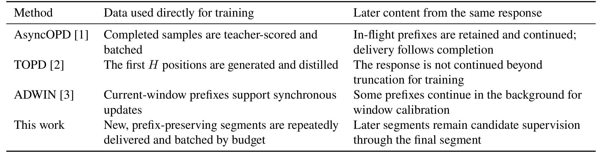
Table 1 的第一列是四种方法，后两列分别追问哪些数据能直接用于训练，以及同一回答后续的内容如何处理。AsyncOPD 能保留进行中回答的前缀并在权重同步后继续生成。教师打分和交付仍针对完整样本。TOPD 的短前缀参与蒸馏，截点以后的内容在该设定下无需生成。ADWIN 让当前窗口进入更新，同时继续生成部分前缀，用续写结果校准未来窗口。Streaming OPD 在同一条轨迹里反复提交增量，随后生成的部分和最终片也保有参加训练的资格。这张表提供协议结构的对照。若把问题写成“能否在回答生成完成前更新”，短前缀路线已经给出肯定答案。持续交付还要落实后续片段的身份、前缀和监督位置。对训练器而言，收到若干片段只代表候选供给增加，是否取用仍由版本规则和批约束决定。四行使用的目标、数据和资源配置各有背景，表格没有在统一的质量目标或设备预算下比较速度和准确率，工程评审应把它用来看接口覆盖，不能把更灵活的接口直接排成更强的训练路线。
这条机制还需要区分两种“前缀复用”。生成器续写时，可以沿已有文本继续解码，系统是否保留和重用缓存取决于具体实现及权重是否切换。教师和训练器重新计算新位置的条件分布时，仍需要前缀可见。按片分开发送会使老位置多次出现在输入，保留历史并不给这些位置重复计损失。若日志只看经过模型的词元数，长前缀会被计入多次，看起来数据量充足，实际每步梯度可能只覆盖少量新位置。若日志只给出消息数量，切细以后供给次数又会机械变多。判断训练有没有变得更充足，要同时核对生成的独特位置、交付位置、已打分位置和最终承担损失的位置。在一个原本受计算限制的工作负载中，多出的前缀处理甚至可能占去原有流水线的并发余量。
版本问题也随交付粒度改变。相同回答的前片可能由旧版本生成，后片在新版本收到广播后继续写。教师固定时，同一前缀产生的教师目标可以保持稳定，但学生在更新前后对这个局部状态的预测会变，学生访问到这个上下文的概率也会变。前一种差异可以用局部 KL 或分布支持的交集描述，后一种差异涉及前缀的访问分布。一个历史片段在当前模型的教师词表覆盖很高，仍可能来自当前策略罕见的状态。反过来，若简单丢弃所有旧片段，较长回答的尾部往往更晚准备好，按年龄过滤可能同时抬高新鲜度、减少可用监督并改变覆盖深度。IMPALA 等工作说明生成策略与学习策略的距离需要处理，但其中针对价值估计的校正无法直接替代本文在旧前缀上计算的前向 KL。
1.3 将供给与训练效果放进同一条链路
论文把交付时钟和更新时钟拆开以后，最先要问的是一批训练了多少位置。如果原来按完成样本数量组批，改造后仍按相同数量的片段组批，同一个数字代表的有效监督量就变了。即便每步采用词元平均，样本数减少仍然会改变估计噪声，长短轨迹在批内的占比也可能随之变化。早到部分先被消耗、晚到部分挤到之后，体现的是训练顺序和覆盖的变化，单独调低学习率可以改变更新尺度，却不能把缺失的后段重新放进池子。反过来，同一个监督预算可以由少量长样本或许多短片段凑够，两个批次的题目多样性、位置分布和重复前缀计算可能相差很大。本文把这些差异逐一端到端记录，因此可以看到预算修复取得的收益，也能看到它留下的残差。
对于大模型推理蒸馏，这套接口的主要价值在长尾生成负载，尤其是答题长度差异大、得分服务与训练设备分别部署的场景。把它借到推荐系统里的生成式解释、用户历史摘要或多步候选构造时，首先要看标签形态。若某个位置已有可计算的教师条件分布，就能讨论提前交付和批内预算。对最终点击、完播或整段序列的延迟反馈，前缀生成完成还不足以得到最终标签，需要额外的过程监督或估计机制。在推荐训练已有特征延迟和样本等待的情况下，可借鉴的是用实际参与梯度的标签位置或目标权重来核算供给，同时保留版本和时延分布。本文只做数学蒸馏，离线题目准确率没有提供线上消费指标或推荐效果的证据。
这也决定了如何读两条主要实验线。质量实验的横轴是训练器更新数，作者在固定的候选集合里比较测试峰值和过程均值，并用一个旧检查点分叉做续训。独立原型关心的是批次准备等待、训练器空闲和历史运行时长。分片训练自然会影响两条线，但要推出规模化节约，需要同一训练轨迹上的供给等待、消耗计算、质量和资源记录。论文的实证作用在于识别哪些环节值得单独测量，质量和供给数据各自有可追溯的实验边界。
2. 方法
2.1 可以提前提交的局部蒸馏目标
公式（1）给出理想目标，固定教师和在线学生在同一因果前缀上比较下一词元分布。教师提供的是对该上下文下各种可能续写的指导，即便学生采样了一个低概率词元，训练仍按分布计算。教师打分服务读到的题目与前缀必须和学生训练端一致，否则两端的条件分布指向了不同状态。这个条件决定了片段记录为什么要与原文位置一起传递。
符号解释：$x$ 是提示，$y_{\lt t}$ 是学生轨迹在位置 $t$ 以前的内容，$\pi_\psi$ 是参数固定的教师，$\pi_\theta$ 是待更新学生。$D_{\mathrm{KL}}$ 的次序确定了由教师分布加权。每个位置的输出是一项损失，训练器以学生参数为求导目标。下一位置之后的文字尚未产生也不影响当前两个条件分布。这个性质使教师打分可以随片段推进，尚未到达的尾部仍可在之后提供自己的局部目标。
公式（2）是论文所记载的近似，保留教师指定支持集，用对数概率下限和损失裁剪稳定直接反向传播。
符号解释：$K_t^T$ 是该位置教师选出的前 $k$ 个词元集合，$q_{t,z}$ 与 $p_{t,z}$ 分别是教师和学生在完整词表上的原概率，$z$ 是一个词元，$a$ 是变换的输入，$c$ 是对数下限，$C$ 是单位置损失上限。实现用教师支持集截断且不在子集内重新归一。截断后求和可能为负，外层裁剪把它归零。过大的位置损失也可能饱和。启动脚本记载 $c=-10$、$C=10$，配置默认 $k=128$，主脚本未覆盖 $k$ 与监督词元平均。这个近似保留了局部性，但排序分数、保留位置数、真正梯度和全词表差异之间各有转换，特别是裁剪区间的边缘位置。
2.2 保留前缀并传递版本与掩码
公式（3）把参与前向计算的词元和产生损失的位置分开。一条响应在第一次封片之前从位置一开始生成，后续封片则需要记录上次交付的右端点，用它推导本次区间的左端点。如果实现按学生前缀打分和按新增位置反传分别使用两份索引，必须一致地处理提示偏移与下一词元预测的移位。例子中的片段掩码可以作为这个偏移检查的用例。
符号解释：$[a,b]$ 是本次封片覆盖的新增响应位置区间，$t$ 是响应上的绝对位置，$\mathbf 1$ 是指示函数。输入包含提示及直到 $b$ 的完整响应前缀。历史位置的损失掩码为零，历史词元仍可透过注意力影响新位置的学生预测。实现时可用同一学生参数对整条固定序列做一次前向，再按各片掩码分组加总，检查各片未归约损失与整段求和相符。若分片已分别求均值，合并时要用每片监督总权重再加权。参数跨片发生变化或候选池做了二次采样时，这个恒等关系就无法用来推导学习轨迹相同。
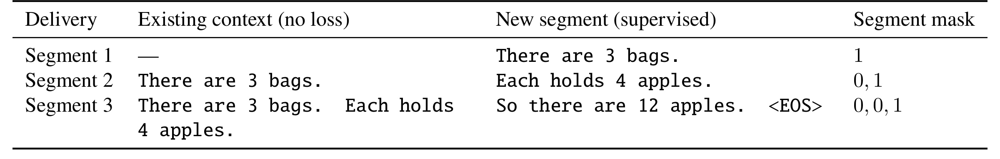
Table 2 从左向右列出交付轮次、仅作为上下文的历史、本轮需要监督的新增文字和片段级掩码。第一片只带题目和关于袋子数的新增内容，第二片输入中包含上一片写出的事实，但更新集中在每袋数量对应的位置。第三片保留两段条件，再监督乘法答案及实际生成的终止标记。表中每个零或一表示片段层面的示意，训练器实际展开到各词元位置，不能把一句话直接计为一个监督词元。顺序编号说明前缀怎样增长，三个样本仍可分别与其他回答的片段合批。假设第二片已被消费、第三片的评分还在队列，它们就可能落在不同的优化更新，后续损失中的学生概率也可能由另一版模型产生。这个例子可用于检查实现是否误把前两片也计入第三片的分母、是否以字符串拼接破坏原始位置、以及是否在每一片错误地插入终止标记。正确做法是保存原有提示边界、绝对响应索引和真实结束事件，便于排查重复监督与丢失终片。
公式（4）和（5）给出版本年龄与局部支持审计。
符号解释：$v_t$ 是生成位置 $t$ 的权重版本，$v_u$ 是更新 $u$ 消费时对应的版本，前者取自生成记录。$K_t^S$ 是学生的前 $k$ 集合，$M_t$ 表示教师支持集上学生的总概率，$O_t$ 是教师与学生集合交集的元素个数。使用同一完整前缀才能解释两个局部统计，版本差则用来描述事件之间的距离。质量审计应同时看旧版本的位置在响应深度上如何分布，因为允许继续生成时，版本标签可以随生成跨段改变。兼容性指标进入筛选和重权实验，但它们分别衡量概率质量和集合关系，不能代替当前学生生成该前缀的访问概率。
2.3 从封片到评分、入池和更新
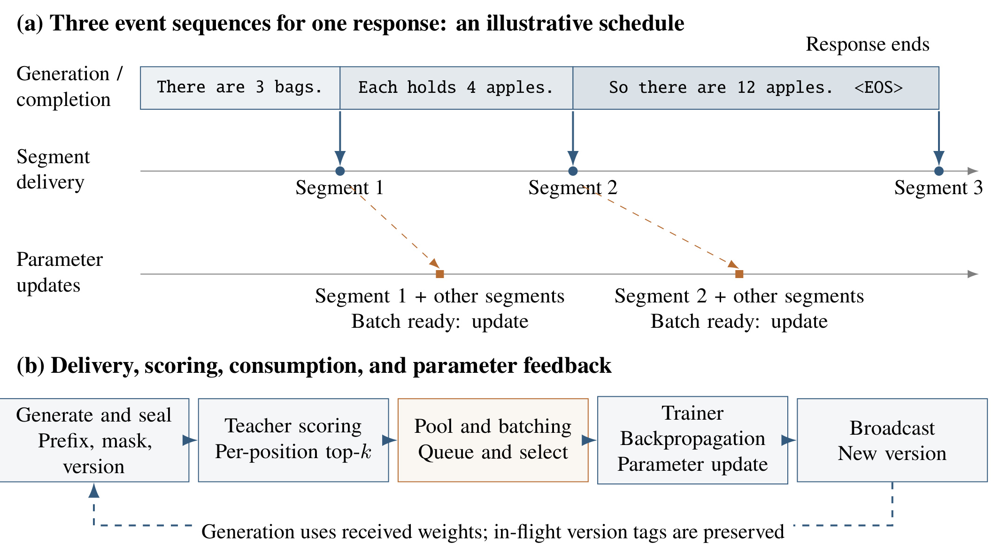
Figure 1 上半部把同一个回答的生成与结束、三次片段交付和两次示意中的参数更新排在独立轨道。前两次向下箭头标出可提交的新增文字，最后一次交付伴随真实结束。图中的虚线箭头进入由其他回答的片段共同凑齐的训练批次。这里的时间位置只表达因果先后和调度机会，教师打分耗时没有画入，也无法从画图的间距读出提前了多少秒。第三段即使赶不上图内两次更新，也有自己的交付路径。下半部说明服务边界，生成侧封住新增内容，发送完整前缀、掩码及版本。教师在同一条件上下文计算各位置的前列分布，打分结果供候选池排队，训练器决定取用哪些有效位置并反传。广播把新版本送到生成侧，在途位置保留各自生成时的标签。实际实现以权重切换引起的暂停恢复作为一个封片触发，只在未交付区间非空时先送出旧版本新片，再保留累计上下文恢复。终止或达到长度上限时交付最后尚未释放的区间。于是三种事件序列仍满足依赖，片段要先生成，监督要先准备好，而批次准备好后才有更新。图上的示意也给出了可观测边界：分别计量封片、教师打分完成、队列出入和新版本广播，才能判断等待发生在哪段。 封片过于频繁还会增加消息与重复前缀前向。改造前若已保持一条完整回答队列常满，应先测打分所用的输入位置和真正产生损失的位置各有多少，以及新增供给能否越过组批门槛。数据流和广播反馈用图中的上下两条路径表达，这两类开销也要分别记录。
基本路径没有主动重放已交付的位置。完整性门控、陈旧片段重放和再生成是额外干预，加入其中任何一项都应重新记录监督是否已经使用、候选被过滤的原因及新增的计算。该循环属于生成训练数据的流程，最终学生做正常自回归推理时可直接用训练后的参数，教师评分、候选池和更新广播都属于训练阶段。
2.4 监督消费预算和分阶段控制
定义 1 用一个协议描述训练路径，并允许它随更新 $u$ 改变。
符号解释：$\gamma_u$ 是封片规则，$B_u$ 是单次更新的目标监督预算，$s_u$ 是候选位置选择，$\rho_u$ 是陈旧位置处理或附加权重，$\sigma_u$ 是同步或异步的取批调度。只对完成回答封片也能写成一个协议。论文在早期尝试固定异步交付下修复预算或改变位置规则，再让续训从同一权重出发修改消费及优化器状态。更新粒度由可用监督和协议共同决定，协议也允许固定不变。
公式（6）从已到达的候选池构造实际训练批。举例说，一片含长历史而仅有少量增量的响应，可以占据很多前向预算，却只给损失贡献少量位置。筛选可能继续减少这些位置，重权则改变留下位置之间的梯度比例。把消耗量写成权重是否为正，便于独立核查两种改变，并避免用候选池原始大小代替训练器真正消费的分母。
符号解释：$P_u$ 是更新 $u$ 的候选位置集合，$i$ 为其中一个位置，$m_i$ 是原始片段掩码，$a_{u,i}$ 是是否选中，$\rho_{u,i}$ 为非负权重，$w_{u,i}$ 是最终系数，$L_i$ 在代码记录中由公式（2）的近似实现。$L_u$ 分母用总权重，$N_u$ 按拥有正权重的位置计数，二者在二值掩码时相等。零总权重时不能形成有效更新。作者将目标预算、候选数量和实际参与量分别记账，因为组入整片会超出目标，后续筛选也可能让有效数量减少。位置选择实验以十六万候选为目标，再在每个微批内保留一半。名义八万由此而来，实际量要以过滤后的统计为准。
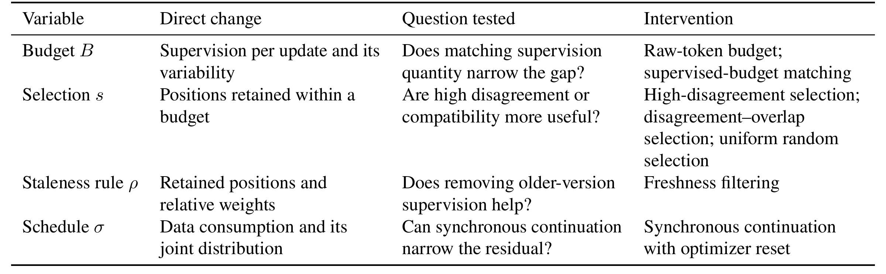
Table 3 的四列依次给出协议变量、最直接变化的量、对应诊断问题以及使用的干预。预算行把原始输入总量与监督位置量同时列出，因为大量历史词元经过模型却只有新增处给出损失。两种预算即使数字相同，也会产生不同的更新。选择行把高分歧、分歧乘重叠以及随机选取并列，等候选来源、等名义预算才便于看筛选规则改变了哪些位置。陈旧处理改变保留位置或相对权重，这通常连带改变尾部比例与实际监督量。调度行把同步续训连同优化器重置写在同一格，提示读者要看一整套继续训练的路径。虽然表格按变量分行，协议运行时会在同一批数据上联动。例如过滤旧版本后，系统可以等待更多片段凑足预算，也可能直接用更少位置更新，两种做法都会改变等待和数据形态。因此复验时需要逐步记入池、出池与过滤后的统计，并把选择分数和反传权重作为不同字段存档。
3. 实验结果
3.1 任务、运行口径与四个候选集合
学生 Qwen3-0.6B 从固定的 Qwen3-4B 教师蒸馏。论文记录的生成服务基于 vLLM，训练器由 VERL v0.8.0 局部修改，采用 FSDP2 直接对前向 KL 反传。启动配方使用混有 GSM8K 与 DAPO 来源的数学题训练文件，来源字段能追到题目资源，实际过滤和数量未完整披露。训练采样的温度与 top-p 均为 1，每题四个响应，最多生成 2048 词元，默认学习率 $10^{-5}$。GSM8K 测试 1319 道题，温度为零，主入口评估长度上限为 1024，通过统一数值抽取与相等判断计分。同步和朴素流式配方中训练器、生成器、教师 GPU 分配为 4/1/1，原始词元预算、降低学习率和监督预算匹配配方为 2/1/1。这里对齐的是质量比较的更新轴，完整的资源等价运行未记录。
论文 §4.1 的更新轴换算如下。
符号解释：$u$ 是从训练起点计的训练器更新数，$g$ 是参数广播版本索引，广播间隔为四次更新，$r$ 表示续训分支自身累计的更新。续训分支从监督预算匹配的 352 步权重启动，所以分支计数要加 352 才能与主运行对齐。早期用 32 到 224 的七点，长窗用 256、288 至 576 再加 596 共十二点，晚期开关三点是 384、416、448，同步续训则用 384 到 576 的七点。每个方法先在同一组候选中独立选自己的最好测试准确率，同分取更早的步。这些峰值发生在各自运行及检查点，差值表示共同候选窗内的独立峰值差。过程均值是相关检查点的算术平均。用同一测试集选最大值会产生选择乐观，现有主窗每方法一条轨迹，论文未据此建立等价性或多随机种子结论。
3.2 实际监督量与早期预算匹配
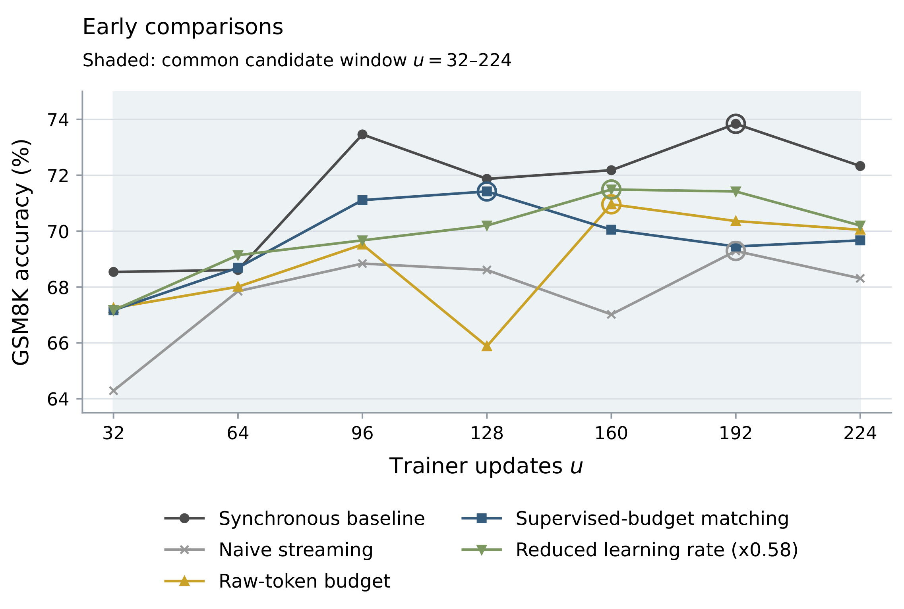
Figure 2 的横轴是训练器更新，纵轴是 GSM8K 测试准确率，阴影框住从三十二步到二百二十四步的七个共同候选。黑线是同步基线，灰线是朴素流式，黄线按原始词元预算组批，蓝线按实际监督位置组批，绿线只把默认学习率乘以零点五八，仍由朴素流式的样本计数决定组批。空心圆标各线在窗口内选中的最早峰值。同步峰与朴素峰都出现在一百九十二步，监督预算匹配则在一百二十八步就出现窗内最好值，之后有回落。原始词元预算恰在这一百二十八步出现明显低点，到一百六十步才达到自己窗内最高值。绿线在一百六十步的峰值与蓝线接近，后几点评估也呈现不同变化。若只截取预算匹配第一次触顶的位置，就会把两条可修复路径之间的时序差异写成固定优势。沿完整阴影区域阅读才能看到回撤和不同方法的峰值顺序。七个点统一了评价机会，连线只帮助阅读离散检查点，空心圈也只说明在哪个时点测试得分最高。更细交付初期出现质量缺口可以在图中直接看到，实际训练数量为何减少还需看下一张供给审计表。
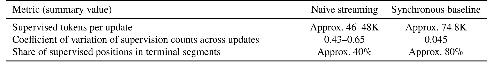
Table 5 左列依次报告每次更新的近似监督词元数、跨更新监督数量的变异系数，以及来自终止片段的位置在全部监督中的比例。朴素流式约四万六到四万八千，同步约七万四千八百。变异系数约零点四三到零点六五，同步为零点零四五。终止片段的监督占比约四成，同步约八成，计的是带终止标记的整个片段内的位置，范围可远大于一个结束词元。组批若仍按对象个数，切片后单对象通常只带新增区间，于是单步监督总量下降并更不均匀。累计前缀重复出现会抬高原始输入数，所以只读前向输入统计容易误判。表中的区间是历史汇总所给的精度，原始汇总未列明起止步和归约范围，无法把它解释成全程最值或置信区间。终止片段占比的变化也可能部分来自片段旗标的分母改变，仍要用响应绝对位置和分层长度数据才能回答后段监督究竟损失多少。实际排查时可以在每步同时记录原始、候选和有效位置三种计数，检查预算命中是否掩盖了长前缀的重复开销。
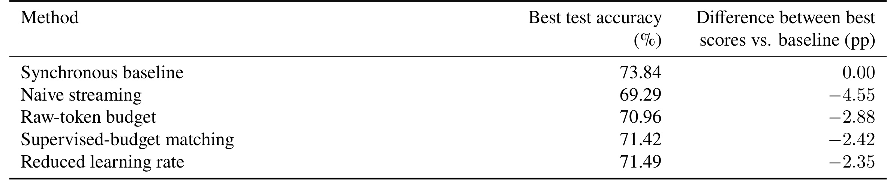
Table 6 的第二列是各自七点内独立选择的最好准确率，第三列将其与同步最高的 73.84% 相减并按百分点表示。朴素流式 69.29%，差 4.55。原始词元预算 70.96%，差 2.88。监督预算匹配 71.42%，差 2.42。降低学习率 71.49%，差 2.35。同一个早期窗口内，按监督量组批比朴素流式多 2.13 个百分点，比原始预算高 0.46 个百分点。降学习率比监督预算的峰值高 0.07 个百分点，两者分别在一百六十步和一百二十八步达到该值，差别小到不足以从一条轨迹判定哪个机制普遍更有效。附录的过程均值可用来查峰值是否孤立，同步 71.55%、朴素 67.74%、原始预算 68.86%、监督预算 69.65%、降学习率 69.90%。同步与朴素的起跑设备配方相同，其他配方还涉及训练设备数，因此这张表适合回答共同更新范围内质量如何变化，无法给出每 GPU 小时的质量排序。实际监督不足会改变采样组成和梯度波动，调小步长针对更新尺度，两条路径得到相近早期峰值给出了应做梯度统计和同资源配对的理由。 两种名义八万的预算为何不同，尤其要在长段之后验证。大量旧词元可以快速填满原始预算，却可能只提供很少的新位置。监督预算允许为这样的批次继续拉片，过程均值改善表明结果不只出现在选中的检查点。为了判断复验优先级，需要记下每次按片累积是否越过名义目标、是否因池内供给不足导致实际监督低于目标，以及不同组的分母是否都按最终有效位置计算。再加上同批的梯度范数、作答长度分布和切换前版本构成，才有机会区分数量修复带来的稳定性与更改了学习路径所带来的变化。论文目前没有提供这个完整的配对账本。
3.3 更长窗口与晚期候选池调整
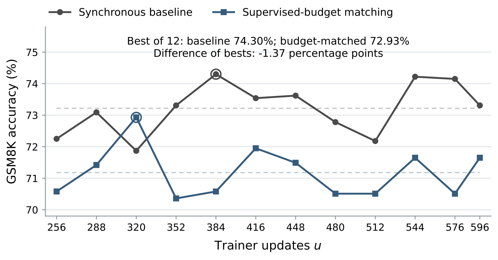
Figure 3 把观察窗口移到较后阶段，横轴从 256 到 576 以三十二步间隔取点，再纳入 596，纵轴仍是 GSM8K 测试准确率。同步曲线黑色空心圈在 384 步，峰值 74.30%。监督预算匹配蓝色空心圈在 320 步，峰值 72.93%，窗口峰值差 1.37 个百分点。蓝线在三百二十步局部高于黑线，后续多处却低于黑线。两条虚线表示过程均值，对应 73.22% 和 71.18%。正文另给未画在此图中的朴素流式十二点峰值 71.57%、均值 69.85%，它的峰值在 596 步。由此可以判断预算匹配的效果仍然可见，同时在较长窗口面临持续的过程差距。早期峰值差、十二点峰值差和后续七点分叉试验随候选窗口改变，不能把它们按先后顺序视为同一效应的时间累积。若要找为什么出现中后期回撤，需要跟踪单步的题目长度、不同深度位置的比重、损失权重和版本分布，再看这些变化有没有先于连续几个检查点的退化。部署时若只选一处偶然交叉作为切换时刻，实际会把测试波动误当成优化规律。
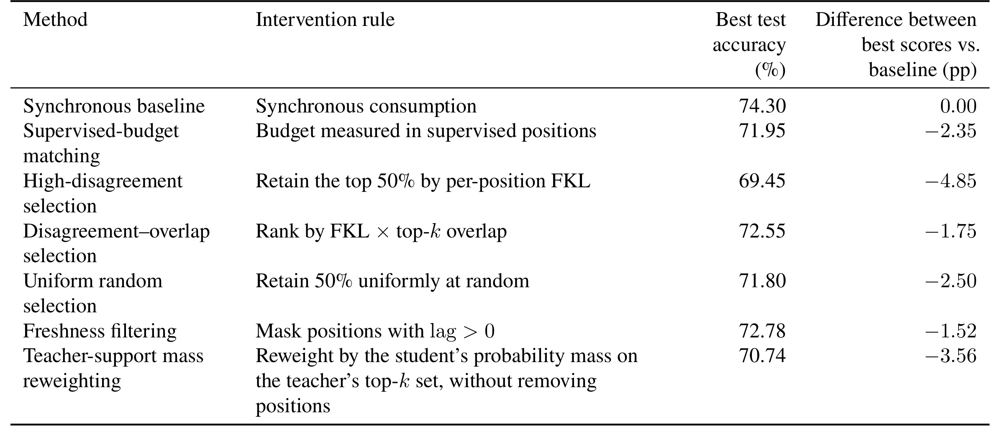
Table 7 左两列把规则固定下来，右两列写对应的最佳测试分数和相对共同同步锚的峰值差。三次评估为 384、416、448，来自每方法一条轨迹。只按位置前向 KL 选前半得到 69.45%，均匀随机保留一半为 71.80%，用前向 KL 乘教师与学生前列集合的交集大小排序得到 72.55%。只按教师支持集内学生概率质量改变损失权重，不删除位置，得到 70.74%。版本滞后大于零全部屏蔽的分支为 72.78%，相对监督预算匹配 71.95% 高 0.83 个百分点，相对同步 74.30% 仍差 1.52 个百分点。位置选择的候选预算是十六万，每个微批各取一半，版本过滤按名义八万监督预算运行。被遮掉的位置不会因为预算标签相同就自动补足，因此实际消费的数量和组成必须检查。最高分比较把同窗不同步的候选放在一个尺度上，是否对连续训练有利要看逐点及均值。表里的排名支持在这套配方下谨慎使用高分歧硬筛，无法把某个候选池分数解释成普适的学习价值。 如果候选池恰好包含一类特别长且偏离教师解法的响应，纯筛可能将监督集中在少数轨迹。即使最终保留相同数量，随机行和乘交集行涉及的题目数及前缀深度都可能随之变化。要验证这一解释，可以固定到达的候选池以及各长度桶内的预算，先测两种得分规则实际选择了哪些位置，再追踪实际加权梯度和新生成轨迹。表中还保留了重权行，其实验提供了数量与权重效应需要分别记账的对照。它允许保留位置原样但改变贡献比例，因此只比正权重的位置数量无法解释这一行的准确率。复现时保存每批总权重及随位置深度变化的权重分布，才可以追查是哪类前缀被实际放大。
响应越长时的误差诊断还涉及长度分组和尾部供给。作者观察到中长响应组的缺口更明显，并在无可靠步映射的补充记录中尝试尾部配额。位置 $t \ge 160$ 的目标比例设置为 40%，来自同步参考约 0.40，异步池同期可选部分约 0.22，分层内均匀抽取。五点最好 68.01%，均值 66.06%，没有可靠更新映射，保留为非配对观察。这个配额只能重分已到达的位置。如果尾段尚未生成或未打分，提高配额也不会增加可交付监督，还可能改变入选位置的版本和题目类型。
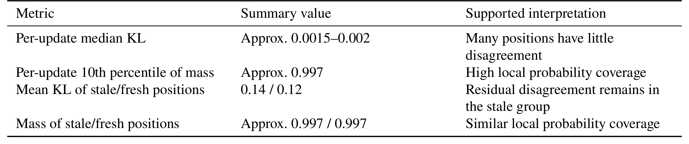
Table 8 前两行针对均匀随机分支的早期候选池，第一行是最初八次更新各自的 KL 中位数约 0.0015–0.002，第二行是逐更新学生在教师支持集上的概率质量第十百分位约 0.997。后两行改用约第八步的版本分组，旧与新位置的平均 KL 是 0.14 与 0.12，概率质量都约 0.997。把所有位置先合池再算分位数会改变前两行的统计含义，均值也无法与另一组的中位数直接对应。这里看到大量候选在局部条件分布上分歧较小，同时旧组仍有局部信号，高覆盖也允许支持内部的概率分配明显不同。这个表检验的是局部兼容性，而训练时当前策略访问某个前缀的概率不在表内。若设计过期策略，需要把版本距离、响应位置、当前模型在该前缀上的支持统计和本批实际权重一起核对。在教师信号粗略可用的前提下，删掉整组旧位置可能损失训练量，保留整组也可能维持长期不常访问的历史分布，必要的质量对照仍来自后续三点曲线和其覆盖范围。
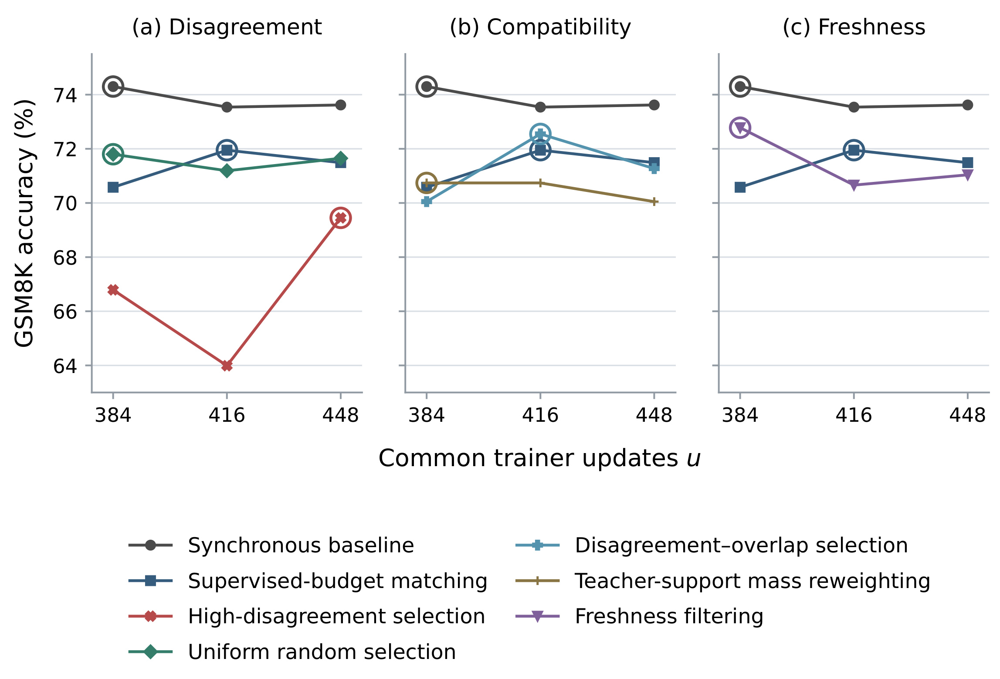
Figure 4 的三块面板共用三处横轴取点和准确率纵轴，同步黑线与监督预算蓝线在每块中重复，方便分别看分歧、兼容性和新鲜度。左图的纯高分歧筛选在中点下探，随机选择在三个点均领先纯筛，过程均值 71.55% 对 66.74%。中图的分歧乘交集在中点取得 72.55% 峰值，但其窗口均值只有 71.29%，接近且略低于预算匹配的 71.34%。按概率质量重权整体更低，均值 70.51%。右图的新鲜度过滤在第一个点最高，随后低于预算曲线，仅一个点评估胜出，均值 71.49%。三个面板里的重复参照来自同一组数据，不能作为额外复验。纯筛分支另有 MATH500 单一端点评估，准确率 29.00%，平均生成长度 566，截断率 24.8%，提示长度控制也需复核。三点图能显示局部峰的时序，无法用结尾的连线猜测未测的下一次更新，也无法把另一基准和另一次长度口径并进 GSM8K 峰值排名。工程上若保留一个候选筛选器做试验，随机等预算参照和有效监督量的落盘应排在局部最高分之前。
3.4 交付顺序与目标实现的独立诊断
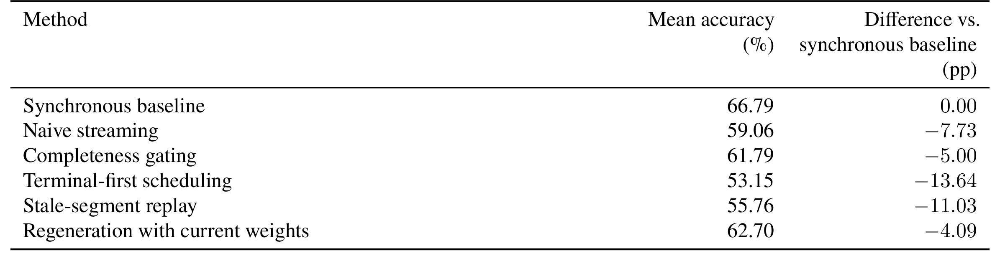
Table 9 的中列是各方法在第十六个更新处的运行均值，右侧与共同同步锚 66.79% 相减。同步、朴素流式、完整性门控和终片优先各有一条记录，旧片重放和当前权重再生成各有两条，所以中列对应的是先在每条运行取唯一候选、再对该方法的运行等权平均。朴素流式为 59.06%，完整性门控为 61.79%，再生成为 62.70%，在此短窗有局部改善。终片优先为 53.15%，旧片重放为 55.76%，即使再生成取得最高的干预均值，仍低同步 4.09 个百分点。再生成两次为 64.82% 和 60.58%，说明把较高的一次单独挑出来会改变读感。此处跨运行均值和前面同一运行跨步骤的均值是两种统计，样本数也提供不了同步对照的一一配对。候选排序和实际数据生成要分开理解，终片优先调整已有片段的入口，重放改变历史位置再被使用的频次，再生成会额外占用解码算力并真正改变前缀。这个筛查说明三者不能只靠供给早晚来比较，进一步测试要核算新增教师和生成开销，并观察完整候选窗口。
同一批监督若换成另一种更新公式，也可能发生训练路径故障。作者试过把 FKL 作为策略梯度权重，带重要性比率裁剪和去掉裁剪的两个实现都得到退化输出，复核抽取后仍为 0.00%。带裁剪版本裁剪率约 97%，去掉裁剪后梯度范数约由 29 升到 81，实验还用了更小的微批配置。这一诊断需要和历史评估器的错误分开。附录里曾出现“六个运行中四个崩溃”的判断，修正答案标记抽取后计分恢复，且其中一条截止步更早。两组现象分别对应评分链路和训练实现，单看一个低分无法区分，应该保存生成原文、抽取结果以及梯度和裁剪率。
位置选择决定在哪些响应位置反传，词表截断决定每个位置用教师分布的哪些项。附录的动态截断在教师前 128 个词元内给每个位置找截点，四点峰值 68.61%、均值 67.57%。双向排序散度分别由师生选动态支持，再用词元 logit 差值经温度缩放形成分布，两路反向 KL 合并，三点峰值 64.22%、均值 63.49%。这两组的更新映射不足，保留各自观察范围。若支持集内所有 logit 一起抬高，集合内部的差值可以不变，集合与其余词表之间的总概率质量却会改变，因此两种目标对概率分配的约束有实质差别。保持监督位置数相同还不足以控制教师的信息量，复验时需在固定前缀和共同词表支持上测量。
3.5 同源检查点的同步续训与非配对延伸
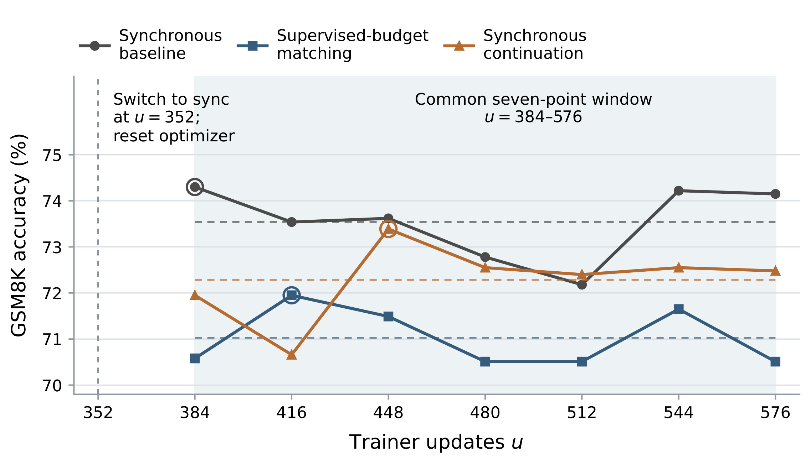
Figure 5 横轴是总更新数，纵轴是 GSM8K 准确率，竖虚线画在 352 步，表示同步续训从异步监督预算匹配的合并模型权重启动、重新初始化优化器。蓝色代表继续原有异步预算方案，橙色代表联合更改后的续训，黑色同步基线是另一路训练，仅以总更新数对齐。阴影内七点包括切换后的前两个测点，这时橙线低于自己的中段峰值，且在 416 步低于蓝线。三条曲线按同步、异步预算匹配、同步续训的顺序，分别在 384、416、448 选中 74.30%、71.95%、73.39%。同步续训相对黑线峰值低 0.91 个百分点，继续异步相对黑线峰值低 2.35 个百分点，续训峰值相对继续异步高 1.44 个百分点。虚水平线是七点算术均值，对应 73.54%、71.03%、72.28%。在最后两个测点续训还各低于同步 1.67 个百分点。两条异步起点分支共享权重起点，续训却同时换调度与优化状态，实际生效的封片、预算和过滤参数也没有完全列出。因此这张图跟踪的是一个可重复设计的比较问题，仍需补日志和消融才能实现完全可复验的单因素对照。若只检查最后五点，就会丢掉切换初期对时间到达目标质量确实会产生影响的两个观测。 起点配对和结果配对是这里最容易混淆的两个口径。前者保证蓝橙从同一套学生权重出发，后者需要在某个固定更新点读纵向差，或训练多个成对种子并预先定义归约。图中最高分出现在三个不同位置，无法沿一条竖线得到三个峰值。切换前的配方保留新旧位置且旧位置权重为一，切换后缺少同等细节，因此即使过程均值也经过相同七点归约，它仍属于联合处理后的一条观察轨迹。复验应先将优化器保留与否做成可比控制，再检验较长窗口里是否仍然缩小差距。
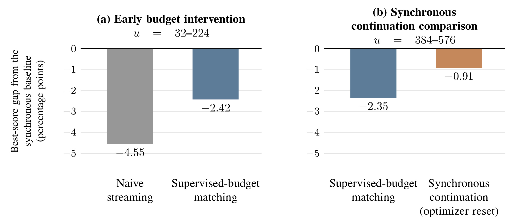
Figure 6 两个面板以各自同步峰值为零，柱子向下表示最佳测试准确率仍低于同窗同步基线，纵轴单位为百分点。左图只涉及三十二到二百二十四步的早期窗口，朴素流式至预算匹配的差距由 4.55 缩到 2.42。右图从三百八十四到五百七十六步，继续异步预算方案的差距为 2.35，重置优化器并切换同步后的差距为 0.91。右图的预算基准与左表同名，但取峰所在窗和所处步数不同。两图各自提供一对按同一规则归约的观察，不能相加成某条训练路径的因果贡献。右图也不能把橙柱相对蓝柱的变化归给调度这一项，续训时优化器状态同时改变。若另用七点过程均值讨论恢复，附录给出相对同步的均值差 2.51 与 1.26 个百分点，约一半均值差收窄，这是另一种过程量。附录还给出排除头两点后的五点过程均值，其更接近同步的表现适合描述后段，主结果仍应保留包含切换早期的七点。
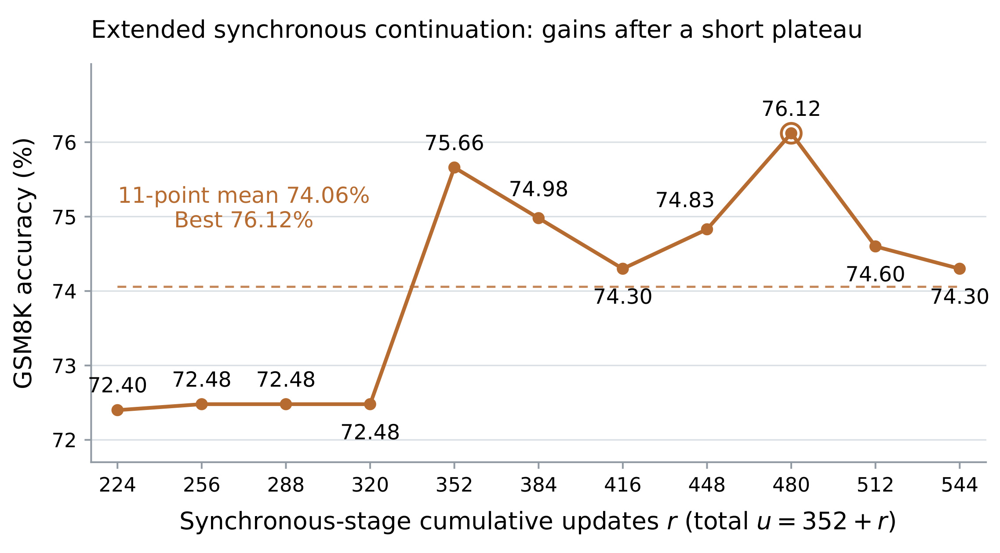
Figure 8 的横轴改为续训阶段计数，换算为总更新需加 352。因而横轴 224 对应总更新 576，这里是延伸重启的位置，分支计数沿用此前阶段累计值。图中前四次是 72.40%、72.48%、72.48%、72.48%，横跨总更新 576 到 672。下一点在总更新 704 才看见 75.66%，再往后有回落，全窗峰值出现在阶段 480、总更新 832，为 76.12%，十一点均值 74.06%。虚线是这个延伸分支含平台期的均值。主七点窗在总更新 576 记录 72.48%，延伸起点在名义同一步记录 72.40%，论文保留两笔记录。图中也没有同期同步参照，因此后续高点只说明这条延伸轨迹能继续改善，无法据此判定等更新追平，另一历史同步分支的 77.41% 同样来自不同运行与范围。持续时间估计还要把观测间隔考虑进去，四点段落只能说明离散评估出现一段平台，下一个检查点更好无法精确定位进步发生在哪一次更新，也不足以给不同切换点设置固定等待时长。 此处能够对接的只有延伸分支自己的累计更新轴。复现实验要保留重启前后的权重哈希、随机状态及计分记录，并为同期同步路线保留同样的后段评估覆盖。
3.6 原型缩短供给等待，净训练时间仍待同轨迹验证
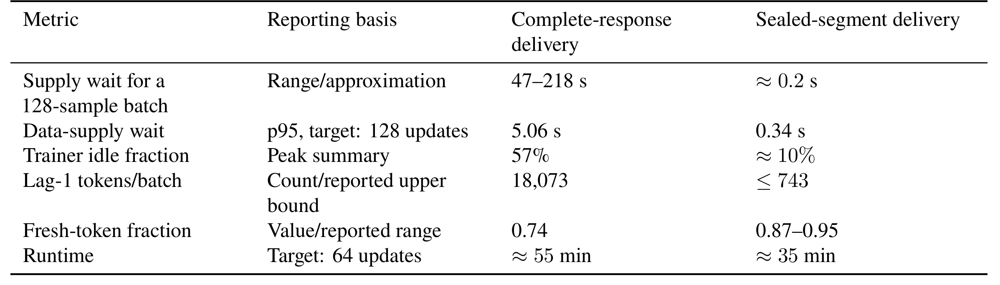
Table 10 第二列逐行给出统计基础。准备一个包含 128 个样本的批次，完整响应交付的供给等待汇总为 47–218 秒，封片交付约 0.2 秒。以 128 次更新为目标的另一组供给等待 p95 为 5.06 对 0.34 秒。训练器空闲占比行是峰值汇总，57% 对约 10%，旧一个版本的词元数和新鲜位置比例也分别使用计数、上界或范围。末行另来自目标 64 次更新的历史原型，分别记录约 55 和 35 分钟。附录的完成字段为 63/64 与 64/64，目标 128 次的后续记录也有 127/128 与 128/128 的相同疑点。逐步计时缺失，无法判定是索引口径还是实际少跑一步。六十四步封片运行溢出丢弃 499 个片段，以约一万七千个作分母约占 2.9%，四倍扩容的后续一百二十八步实验报告零丢弃，两次容量条件有差异。这些行缺少共享的运行窗口，等待包含监督何时能凑成批的影响，无法从中拆出教师模型单次前向用时。因此这里可以确认供给等待在该原型及负载下缩短，约 1.6 只是历史耗时比值。等实际更新、同资源乃至达到同质量门槛的系统加速都需要另行验证。部署时即使供给等待减少，重复处理前缀、重新分发权重、训练设备占用和队列溢出也可能决定端到端结果，只有逐批记下有效监督量和实际训练更新，才能判断省下的等待是否属于关键路径。 因为完整响应可以异步交付，表中的设备空闲也应在相同调度和资源下复核。若分片让队列先满后溢出，幸存片段的响应位置和版本可能偏移，即便吞吐数字较高也可能对应更少有效监督。可把每次溢出记录同候选池入队、教师完成与训练更新对应，再比较同一完整序列产生的重复输入量及相同评价目标的实际代价。
短题工作负载下，完整响应供给等待的中位数约 0.3 秒，队列通常非空。混入长生成任务后报告约 78–87 秒，持续供给的收益空间和回答时长分布有关。另一历史摘要由检查点时间反推异步 4.0–4.4 分钟、同步约 18 分钟，但记录无法确认分母是更新次数还是参数广播的周期，设备配置也未统一，本文不计算吞吐倍率。要把训练质量与系统成本合在一起，需要在预定质量阈值上比同一算力条件下的首次达标时间，记入异步供给、阶段切换、优化器重启、平台期、继续训练和评估等待。目标较低时可能在异步阶段已经达到，目标较高时则可能要多跑大量同步更新。只观察节省的供给耗时无法判断这两种目标的最终得失。
4. 总结
4.1 我的判断
这篇论文最值得保留的是一套可检查的训练接口。每条响应有完整因果前缀，每一片有明确的新位置和真实生成版本，教师和学生在相同上下文计算局部信号，训练批再按照有效监督量组装。这样的日志可以解释同样是八万个输入位置时，有多少真正进入梯度，有多少来自深度较大的响应，有多少由过期权重生成。作者用同一组候选为质量变化建立了可读的参照，也公开保留了后段分支不配对、历史记录单位不明的问题。把这套接口落到工程里，优先验证片段化是否改变了学习数据的组成，然后才比较极端队列等待是否有价值。对只由终点判分的训练流程，需要先解决可用的过程监督，才能把这套片段协议接进去。
4.2 局限
- 实验覆盖有限。 主质量证据集中在一对 Qwen 模型与 GSM8K，长回答、代码执行轨迹或推荐生成任务的分布不同，位置选择和刷新策略需要在目标域上重新验证。
- 统计能力有限。 主比较每方法通常一条轨迹，测试最大值受候选选择影响，窗口均值中的检查点相关。跨机复测十六对的平均绝对差为 0.47 个百分点，历史样本能提示评估波动，无法给其他分差划定通用的显著性阈值。
- 切换机制混合。 续训同时重置优化器和切到同步消费，完整的封片、预算、过滤终态不明。只有一个切换检查点，局部质量回升还难以分配给不同组件，也无从估计一般性的适合切换区间。
- 成本证据存在缺口。 原型的分项口径、完成计数和丢片容量条件不一，质量实验有不同的启动资源配方。没有同轨迹全阶段的墙钟与算力账单，无法从历史耗时估计达到指定质量会节约多少资源。
- 位置审计只观测条件分布。 小 KL、质量覆盖、版本滞后和终止片段比例都只是代理量，缺少对当前策略实际访问分布的直接衡量。蒸馏价值、丢失覆盖和重复计算需要联合分析。
4.3 复验顺序
- 先验收因果前缀和计数。 冻结一批响应与模型版本，核对每片掩码的绝对位置并确认终止片段只出现一次。固定权重下比较整段与分片未归约损失，有效位置总权重、重复输入位置和教师支持形状一起落盘。这样可以在跑长实验前发现前缀破坏、重复监督或预算错位。
- 按共同起点拆切换和重置。 从相同的 352 步权重及可恢复的优化器状态开始，交叉比对是否同步和是否重置，固定实际组批、封片和学习率配方。记录每步的有效监督规模、响应深度、滞后以及梯度范数。多组预先确定的切换步与多个种子可以帮助识别恢复与优化器暂态，并用预先声明的验证规则选检查点后报告独立测试。
- 用同负载与质量门槛核算时间。 同一设备数、同一生成长度混合下分别记录开始、首个监督片就绪、教师打分完成、训练消费和广播。核对完成计数、溢出与不重复的位置数，保存前后两个阶段的累计设备时。设定不同质量目标并用相同评估频率比较首次达标，长题混入比例从低到高分别试验，才能知道队列不足在何处成为瓶颈。
- 针对筛选造成的副作用验证。 随机参照使用相同实际位置数，分别保持每桶的响应深度和版本分布，观测高分歧是否专门抽走了较长或异常轨迹。再比较短前缀、后段和终片的成绩以及答案截断率，区分提高覆盖与改变训练难度两条解释。